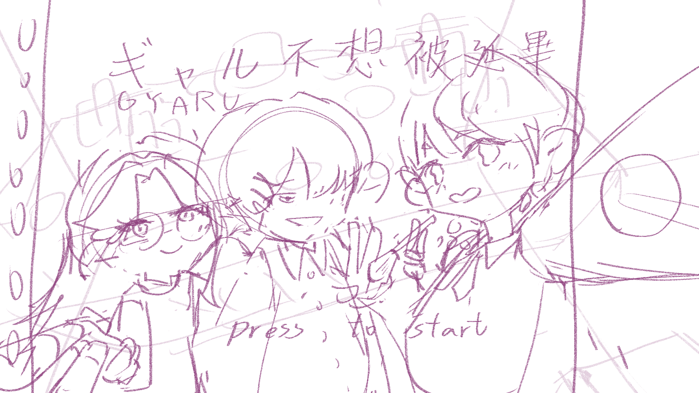

壹、 封面
一、 遊戲名稱
辣妹(日語:ギャル Gyaru )
指在日本的年輕文化中,擁有特定時裝風格和生活方式的年輕女性。這些
「辣妹(ギャル)」女孩通常會染亮麗的髮色,化濃厚的妝,並穿著鮮豔的
時裝。她們的態度和言行也具有活力和強烈的自我表現特徵。
這個詞在日本的年輕文化中有著特殊的意義。她們鮮豔的時裝和態度對許
多年輕人產生了影響,並建立了獨特的文化現象。
二、 遊戲圖示概念:
圖示參考 Y2K 風格的復古手機,容易讓人聯想到辣妹風格
螢幕上的 G 字母表示日文的辣妹(ギャル Gyaru)羅馬拼音開頭字母
貳、 發想
一、 製作動機
自從我決定要申請輔系之後,我發現就算怎麼努力排課,還是脫離不了延
遲畢業的結局,所以我希望透過這個遊戲,讓更多和我面臨相似處境的玩
家得到正常時間畢業的救贖。
二、 遊戲目的
幫助主角成功通過畢業前必須通過的「辣妹考試」(以下稱 Gyaru 考試),
讓主角順利畢業
因為辣妹在現實社會中並不是主流,帶有多樣的偏見與歧視,我希望藉由
劇情的推動,讓更多活不成主流社會期待的玩家獲得前進的動力。
三、 目標客群
。延畢生
。會 3D 暈的遊戲愛好者
。單機遊戲玩家
。喜歡跑酷遊戲的玩家
參、 遊戲類型
。電腦遊戲
。2D 橫向卷軸跑酷遊戲
肆、 世界觀
在這個世界中,Gyaru 是社會階級最高的族群,只要通過一年一次的
Gyaru 考試,就能夠享受無盡的社會紅利,也因此,政府設立了專門培養
能通過 Gyaru 考試的高等學校......
Gyaru 考試:
Gyaru 考試有三大項目,分別是:穿搭、化妝以及心態,穿搭以及化
妝必須符合辣妹(Gyaru)的時尚感,與此同時,在心態上更需像 Gyaru
一樣,用更開放的視角接納自身、也接納他人。
伍、 故事大綱
三位主角是菁英 gyaru 高等學校成績最差的學生,如果沒有通過最終的
gyaru 考試就會面臨延畢的命運。為了準時畢業,三個人一起接受了身為
校長的你組織的特別培訓,幫助他們準時畢業吧!
陸、 遊戲流程
一、 操作方式
。用任意鍵觸發開始遊戲
。以 WS 鍵或是↑↓鍵移動角色在三條跑道上奔跑
二、 玩法介紹
。躲避障礙物並收集關卡中的「學分點」,跑完三個關卡後過關
。一般模式生命條只有五顆心;極限模式只有一顆心
。跌倒會影響 fever 狀態的疊加
三、 關卡介紹
每一關在無 Fever 狀態下約 40 秒完成:
。第一關:服飾百貨地圖:學習 Gyaru 風格的穿搭
。第二關:化妝品專賣店地圖:學習 Gyaru 風格的妝容
。第三關:心態地圖(魔王關):學習 Gyaru 有自信樂於表達自我的開放心態
四、 流程圖

五、 規則補充
。學分點:累積 fever 狀態的點數
。Fever 狀態:連續收集 10 個「學分點」後暴衝一段距離
。碰到障礙物:扣 1 個學分點
柒、遊戲介面與主角設計
一、 遊戲概念設計
。開始頁面

。遊戲頁面

其他遊戲概念圖
。待補
二、 角色概念設計
| Isabella |
Henry |
Mora |
|
個性:
內向、害羞
不太敢嘗試大膽的穿搭，對自己的外貌非常沒自信。 |
個性:
沒耐心、傲慢
衣櫃裡的衣服只有格紋襯衫格紋襯衫和格紋襯衫，覺得穿搭很麻煩。 |
個性:
寡言、疏離
不敢主動與人交談，覺得自己很難和他人開啟一段對話。 |
| |
|
|
捌、 參考資料
。風格概念參考: 《吊帶襪天使》
。故事概念參考:《墊底辣妹》
。角色造型原型參考:109 辣妹、Y2K